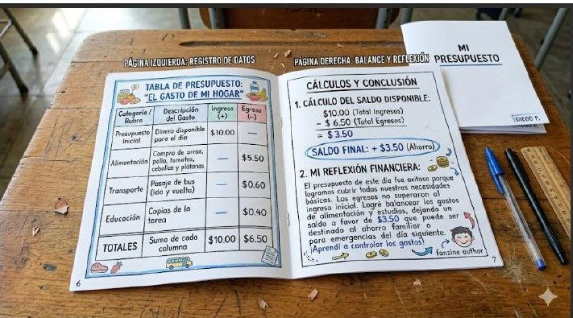

🎬 Presentación del Proyecto
Análisis económico y gestión financiera responsable.
📊 Fases del Análisis Lógico
Estructurando la información a través del cálculo.
1 Comprensión financiera
Analizar situaciones cotidianas de gastos (alimentación, educación, necesidades del hogar).
2 Estructuración matemática
Clasificar la información económica cuantificable en rubros de ingresos (+), egresos (-) y saldo disponible.
3 Ejecución de cálculos
Resolver operaciones aritméticas básicas de adición y sustracción para balancear los recursos lógicamente.
4 Diseño de la tabla
Dibujar a mano con regla una tabla de doble entrada limpia y organizada para registrar el presupuesto final dentro del fanzine.
📓 Mi Presupuesto Familiar
Evidencia del registro de gastos y balance financiero.

"El Gasto de mi Hogar"
Los estudiantes aplicaron operaciones aritméticas para balancear sus ingresos y egresos, logrando una reflexión financiera sobre la importancia del ahorro familiar.
📉 Evidencias Estadísticas
Gráficos, cálculos y análisis en proceso.